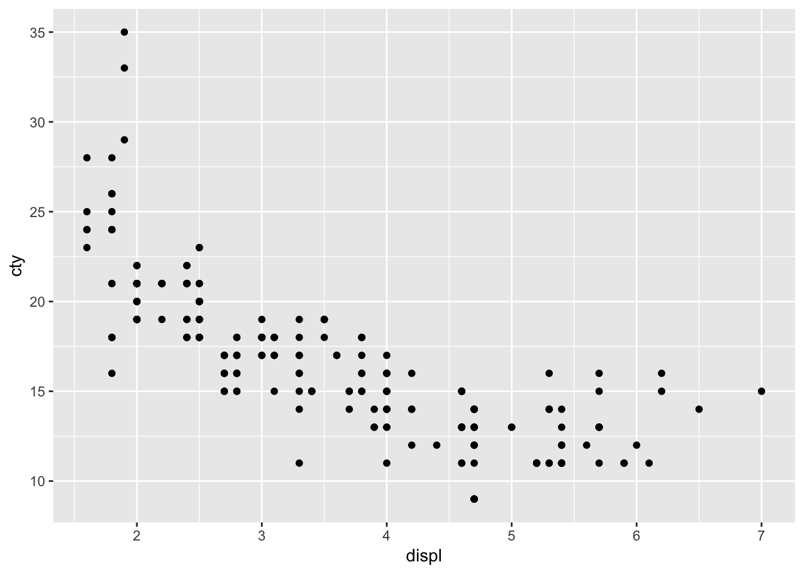
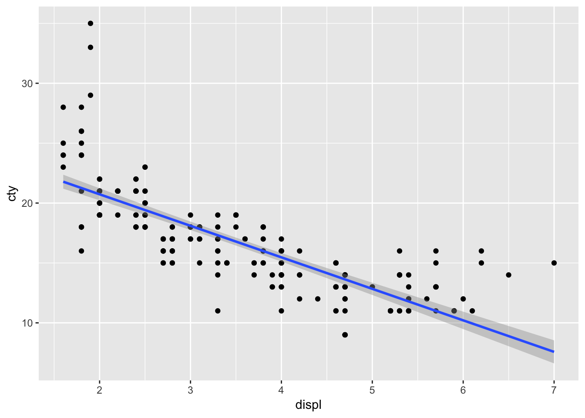
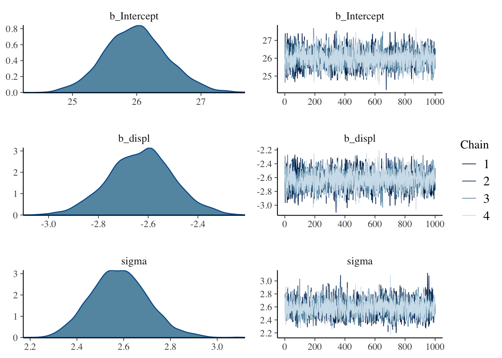
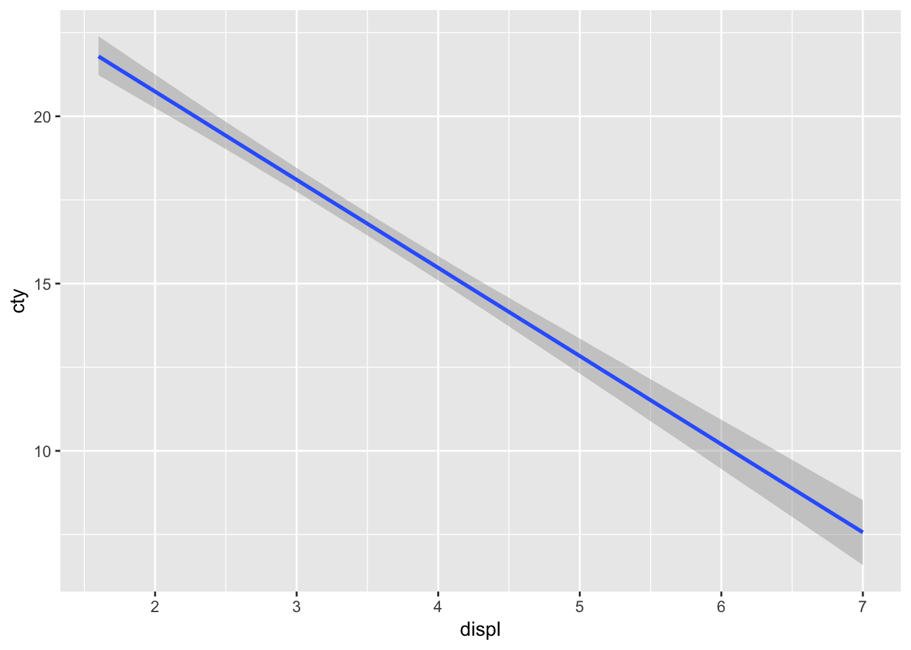
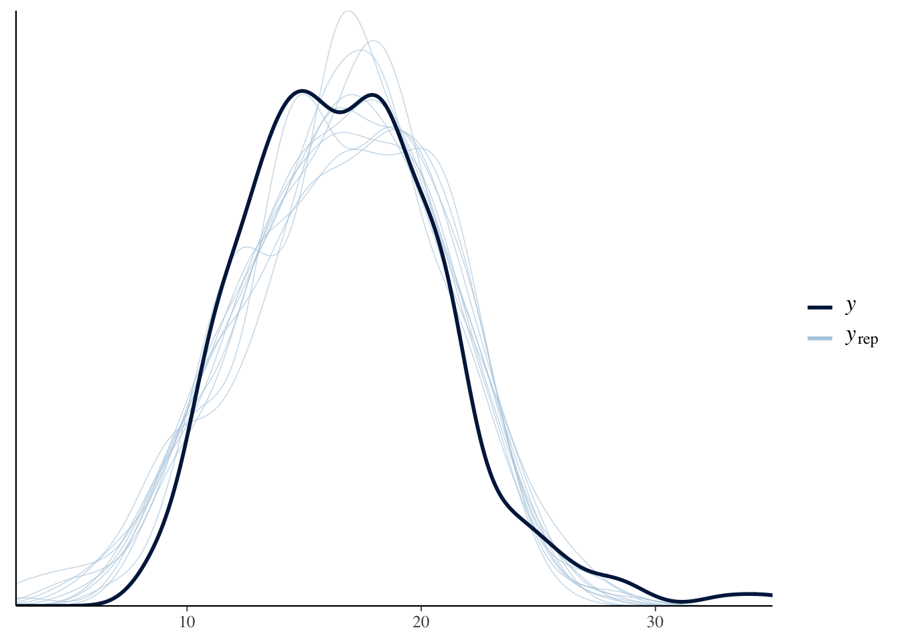
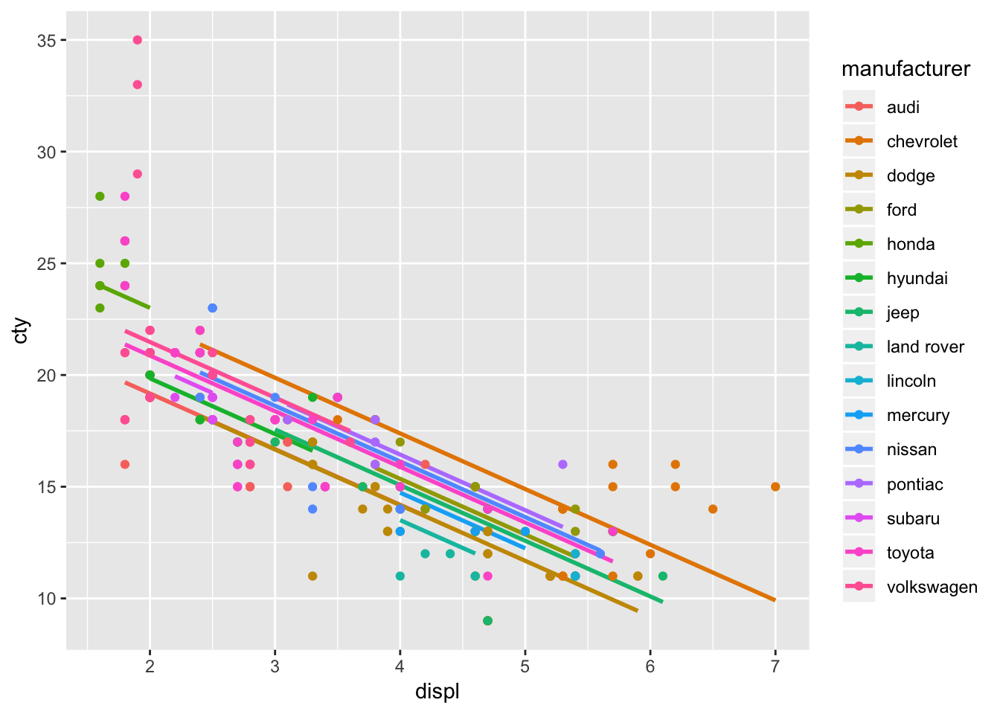
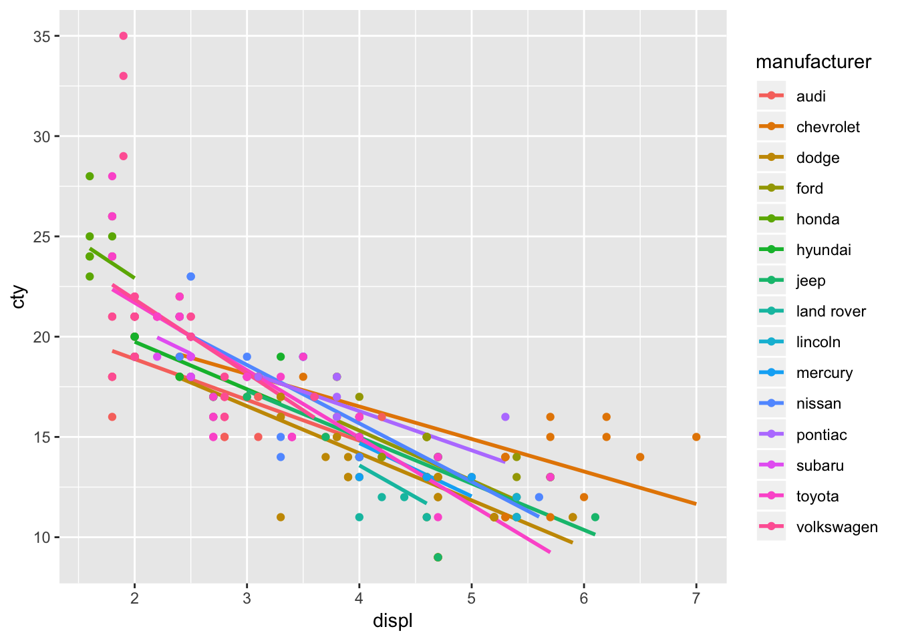

library(brms)## Loading required package: Rcpp## Loading required package: ggplot2## Loading 'brms' package (version 2.7.0). Useful instructions
## can be found by typing help('brms'). A more detailed introduction
## to the package is available through vignette('brms_overview').
## Run theme_set(theme_default()) to use the default bayesplot theme.library(tidyverse)## ─ Attaching packages ────## ✔ tibble 2.0.1 ✔ purrr 0.3.0
## ✔ tidyr 0.8.2 ✔ dplyr 0.7.8
## ✔ readr 1.3.1 ✔ stringr 1.3.1
## ✔ tibble 2.0.1 ✔ forcats 0.3.0## ─ Conflicts ─────────
## ✖ dplyr::filter() masks stats::filter()
## ✖ dplyr::lag() masks stats::lag()今回使うデータははRの持っているサンプルデータです。 車のメーカ(manufacture)，モデル(model)，排気量(displ)，製造年(year)，気筒数(cyl)，オートマ・マニュアルの別(trans), 駆動輪(drv)，市街地での燃費(cty)，高速道路での燃費(hwy)などからなるデータセットです。
data(mpg)
# 少しみてみる
head(mpg)| manufacturer | model | displ | year | cyl | trans | drv | cty | hwy | fl | class |
|---|---|---|---|---|---|---|---|---|---|---|
| audi | a4 | 1.8 | 1999 | 4 | auto(l5) | f | 18 | 29 | p | compact |
| audi | a4 | 1.8 | 1999 | 4 | manual(m5) | f | 21 | 29 | p | compact |
| audi | a4 | 2.0 | 2008 | 4 | manual(m6) | f | 20 | 31 | p | compact |
| audi | a4 | 2.0 | 2008 | 4 | auto(av) | f | 21 | 30 | p | compact |
| audi | a4 | 2.8 | 1999 | 6 | auto(l5) | f | 16 | 26 | p | compact |
| audi | a4 | 2.8 | 1999 | 6 | manual(m5) | f | 18 | 26 | p | compact |
排気量と市街地での燃費の関係をグラフにします。
g <- ggplot(mpg,aes(x=displ,y=cty))+geom_point()
plot(g)
回帰線を追加します。
g <- g + geom_smooth(method='lm')
plot(g)
summary(lm(cty~displ,data=mpg))##
## Call:
## lm(formula = cty ~ displ, data = mpg)
##
## Residuals:
## Min 1Q Median 3Q Max
## -6.3109 -1.4695 -0.2566 1.1087 14.0064
##
## Coefficients:
## Estimate Std. Error t value Pr(>|t|)
## (Intercept) 25.9915 0.4821 53.91 <2e-16 ***
## displ -2.6305 0.1302 -20.20 <2e-16 ***
## ---
## Signif. codes: 0 '***' 0.001 '**' 0.01 '*' 0.05 '.' 0.1 ' ' 1
##
## Residual standard error: 2.567 on 232 degrees of freedom
## Multiple R-squared: 0.6376, Adjusted R-squared: 0.6361
## F-statistic: 408.2 on 1 and 232 DF, p-value: < 2.2e-16result.brm <- brm(cty~displ,data=mpg)## Compiling the C++ model## Start sampling##
## SAMPLING FOR MODEL '7e5af2e7cd64c4d926e4c21aec634789' NOW (CHAIN 1).
## Chain 1:
## Chain 1: Gradient evaluation took 6.2e-05 seconds
## Chain 1: 1000 transitions using 10 leapfrog steps per transition would take 0.62 seconds.
## Chain 1: Adjust your expectations accordingly!
## Chain 1:
## Chain 1:
## Chain 1: Iteration: 1 / 2000 [ 0%] (Warmup)
## Chain 1: Iteration: 200 / 2000 [ 10%] (Warmup)
## Chain 1: Iteration: 400 / 2000 [ 20%] (Warmup)
## Chain 1: Iteration: 600 / 2000 [ 30%] (Warmup)
## Chain 1: Iteration: 800 / 2000 [ 40%] (Warmup)
## Chain 1: Iteration: 1000 / 2000 [ 50%] (Warmup)
## Chain 1: Iteration: 1001 / 2000 [ 50%] (Sampling)
## Chain 1: Iteration: 1200 / 2000 [ 60%] (Sampling)
## Chain 1: Iteration: 1400 / 2000 [ 70%] (Sampling)
## Chain 1: Iteration: 1600 / 2000 [ 80%] (Sampling)
## Chain 1: Iteration: 1800 / 2000 [ 90%] (Sampling)
## Chain 1: Iteration: 2000 / 2000 [100%] (Sampling)
## Chain 1:
## Chain 1: Elapsed Time: 0.057151 seconds (Warm-up)
## Chain 1: 0.076039 seconds (Sampling)
## Chain 1: 0.13319 seconds (Total)
## Chain 1:
##
## SAMPLING FOR MODEL '7e5af2e7cd64c4d926e4c21aec634789' NOW (CHAIN 2).
## Chain 2:
## Chain 2: Gradient evaluation took 1.2e-05 seconds
## Chain 2: 1000 transitions using 10 leapfrog steps per transition would take 0.12 seconds.
## Chain 2: Adjust your expectations accordingly!
## Chain 2:
## Chain 2:
## Chain 2: Iteration: 1 / 2000 [ 0%] (Warmup)
## Chain 2: Iteration: 200 / 2000 [ 10%] (Warmup)
## Chain 2: Iteration: 400 / 2000 [ 20%] (Warmup)
## Chain 2: Iteration: 600 / 2000 [ 30%] (Warmup)
## Chain 2: Iteration: 800 / 2000 [ 40%] (Warmup)
## Chain 2: Iteration: 1000 / 2000 [ 50%] (Warmup)
## Chain 2: Iteration: 1001 / 2000 [ 50%] (Sampling)
## Chain 2: Iteration: 1200 / 2000 [ 60%] (Sampling)
## Chain 2: Iteration: 1400 / 2000 [ 70%] (Sampling)
## Chain 2: Iteration: 1600 / 2000 [ 80%] (Sampling)
## Chain 2: Iteration: 1800 / 2000 [ 90%] (Sampling)
## Chain 2: Iteration: 2000 / 2000 [100%] (Sampling)
## Chain 2:
## Chain 2: Elapsed Time: 0.059472 seconds (Warm-up)
## Chain 2: 0.055996 seconds (Sampling)
## Chain 2: 0.115468 seconds (Total)
## Chain 2:
##
## SAMPLING FOR MODEL '7e5af2e7cd64c4d926e4c21aec634789' NOW (CHAIN 3).
## Chain 3:
## Chain 3: Gradient evaluation took 1.3e-05 seconds
## Chain 3: 1000 transitions using 10 leapfrog steps per transition would take 0.13 seconds.
## Chain 3: Adjust your expectations accordingly!
## Chain 3:
## Chain 3:
## Chain 3: Iteration: 1 / 2000 [ 0%] (Warmup)
## Chain 3: Iteration: 200 / 2000 [ 10%] (Warmup)
## Chain 3: Iteration: 400 / 2000 [ 20%] (Warmup)
## Chain 3: Iteration: 600 / 2000 [ 30%] (Warmup)
## Chain 3: Iteration: 800 / 2000 [ 40%] (Warmup)
## Chain 3: Iteration: 1000 / 2000 [ 50%] (Warmup)
## Chain 3: Iteration: 1001 / 2000 [ 50%] (Sampling)
## Chain 3: Iteration: 1200 / 2000 [ 60%] (Sampling)
## Chain 3: Iteration: 1400 / 2000 [ 70%] (Sampling)
## Chain 3: Iteration: 1600 / 2000 [ 80%] (Sampling)
## Chain 3: Iteration: 1800 / 2000 [ 90%] (Sampling)
## Chain 3: Iteration: 2000 / 2000 [100%] (Sampling)
## Chain 3:
## Chain 3: Elapsed Time: 0.05917 seconds (Warm-up)
## Chain 3: 0.056405 seconds (Sampling)
## Chain 3: 0.115575 seconds (Total)
## Chain 3:
##
## SAMPLING FOR MODEL '7e5af2e7cd64c4d926e4c21aec634789' NOW (CHAIN 4).
## Chain 4:
## Chain 4: Gradient evaluation took 1.3e-05 seconds
## Chain 4: 1000 transitions using 10 leapfrog steps per transition would take 0.13 seconds.
## Chain 4: Adjust your expectations accordingly!
## Chain 4:
## Chain 4:
## Chain 4: Iteration: 1 / 2000 [ 0%] (Warmup)
## Chain 4: Iteration: 200 / 2000 [ 10%] (Warmup)
## Chain 4: Iteration: 400 / 2000 [ 20%] (Warmup)
## Chain 4: Iteration: 600 / 2000 [ 30%] (Warmup)
## Chain 4: Iteration: 800 / 2000 [ 40%] (Warmup)
## Chain 4: Iteration: 1000 / 2000 [ 50%] (Warmup)
## Chain 4: Iteration: 1001 / 2000 [ 50%] (Sampling)
## Chain 4: Iteration: 1200 / 2000 [ 60%] (Sampling)
## Chain 4: Iteration: 1400 / 2000 [ 70%] (Sampling)
## Chain 4: Iteration: 1600 / 2000 [ 80%] (Sampling)
## Chain 4: Iteration: 1800 / 2000 [ 90%] (Sampling)
## Chain 4: Iteration: 2000 / 2000 [100%] (Sampling)
## Chain 4:
## Chain 4: Elapsed Time: 0.064147 seconds (Warm-up)
## Chain 4: 0.0945 seconds (Sampling)
## Chain 4: 0.158647 seconds (Total)
## Chain 4:result.brm## Family: gaussian
## Links: mu = identity; sigma = identity
## Formula: cty ~ displ
## Data: mpg (Number of observations: 234)
## Samples: 4 chains, each with iter = 2000; warmup = 1000; thin = 1;
## total post-warmup samples = 4000
##
## Population-Level Effects:
## Estimate Est.Error l-95% CI u-95% CI Eff.Sample Rhat
## Intercept 26.01 0.49 25.09 27.00 3680 1.00
## displ -2.64 0.13 -2.90 -2.38 3675 1.00
##
## Family Specific Parameters:
## Estimate Est.Error l-95% CI u-95% CI Eff.Sample Rhat
## sigma 2.58 0.12 2.36 2.83 3824 1.00
##
## Samples were drawn using sampling(NUTS). For each parameter, Eff.Sample
## is a crude measure of effective sample size, and Rhat is the potential
## scale reduction factor on split chains (at convergence, Rhat = 1).plot(result.brm)
# 取り出し -> データフレーム型へ -> 頭の10行だけ表示
rstan::extract(result.brm$fit) %>% data.frame %>% head(10)| b_Intercept | b | sigma | lp__ |
|---|---|---|---|
| 26.48716 | -2.745120 | 2.770516 | -558.5269 |
| 25.44336 | -2.424020 | 2.533785 | -558.5226 |
| 26.70798 | -2.815379 | 2.574245 | -557.7925 |
| 26.48799 | -2.764304 | 2.595727 | -557.2607 |
| 27.01781 | -2.945058 | 2.396270 | -561.2087 |
| 26.48300 | -2.755114 | 2.627268 | -557.3291 |
| 26.53399 | -2.724895 | 2.454951 | -558.3007 |
| 25.89326 | -2.554560 | 2.550249 | -557.3541 |
| 26.53775 | -2.764467 | 2.779034 | -558.7060 |
| 26.14172 | -2.646847 | 2.412959 | -557.7353 |
plot(marginal_effects(result.brm))
pp_check(result.brm)## Using 10 posterior samples for ppc type 'dens_overlay' by default.
predict(result.brm) %>% head(10)## Estimate Est.Error Q2.5 Q97.5
## [1,] 21.32292 2.639172 15.96666 26.50937
## [2,] 21.36969 2.639504 16.22541 26.62453
## [3,] 20.73625 2.599587 15.51078 25.69155
## [4,] 20.68190 2.590695 15.58800 25.70757
## [5,] 18.68016 2.541052 13.73363 23.58297
## [6,] 18.57528 2.605510 13.68514 23.61279
## [7,] 17.81530 2.611673 12.72371 23.02150
## [8,] 21.29684 2.603255 16.27208 26.37831
## [9,] 21.31282 2.611824 16.22988 26.43424
## [10,] 20.82397 2.585612 15.76181 25.98284result.brm$model## // generated with brms 2.7.0
## functions {
## }
## data {
## int<lower=1> N; // total number of observations
## vector[N] Y; // response variable
## int<lower=1> K; // number of population-level effects
## matrix[N, K] X; // population-level design matrix
## int prior_only; // should the likelihood be ignored?
## }
## transformed data {
## int Kc = K - 1;
## matrix[N, K - 1] Xc; // centered version of X
## vector[K - 1] means_X; // column means of X before centering
## for (i in 2:K) {
## means_X[i - 1] = mean(X[, i]);
## Xc[, i - 1] = X[, i] - means_X[i - 1];
## }
## }
## parameters {
## vector[Kc] b; // population-level effects
## real temp_Intercept; // temporary intercept
## real<lower=0> sigma; // residual SD
## }
## transformed parameters {
## }
## model {
## vector[N] mu = temp_Intercept + Xc * b;
## // priors including all constants
## target += student_t_lpdf(temp_Intercept | 3, 17, 10);
## target += student_t_lpdf(sigma | 3, 0, 10)
## - 1 * student_t_lccdf(0 | 3, 0, 10);
## // likelihood including all constants
## if (!prior_only) {
## target += normal_lpdf(Y | mu, sigma);
## }
## }
## generated quantities {
## // actual population-level intercept
## real b_Intercept = temp_Intercept - dot_product(means_X, b);
## }各群に回帰線を当てはめますが，その全体的な傾向も要約して表します。 群ごとの散らばりを分布から作られているもの，と考えるところがミソです。
切片が群ごとに異なる，というモデルを考えます。 今回は，15のメーカによって切片が違うとします。
result.hlm1 <- brm(cty~displ+(1|manufacturer),data=mpg)## Compiling the C++ model## Start sampling##
## SAMPLING FOR MODEL '9fac491b11fc784e76e04c51fb3d0c72' NOW (CHAIN 1).
## Chain 1:
## Chain 1: Gradient evaluation took 4.6e-05 seconds
## Chain 1: 1000 transitions using 10 leapfrog steps per transition would take 0.46 seconds.
## Chain 1: Adjust your expectations accordingly!
## Chain 1:
## Chain 1:
## Chain 1: Iteration: 1 / 2000 [ 0%] (Warmup)
## Chain 1: Iteration: 200 / 2000 [ 10%] (Warmup)
## Chain 1: Iteration: 400 / 2000 [ 20%] (Warmup)
## Chain 1: Iteration: 600 / 2000 [ 30%] (Warmup)
## Chain 1: Iteration: 800 / 2000 [ 40%] (Warmup)
## Chain 1: Iteration: 1000 / 2000 [ 50%] (Warmup)
## Chain 1: Iteration: 1001 / 2000 [ 50%] (Sampling)
## Chain 1: Iteration: 1200 / 2000 [ 60%] (Sampling)
## Chain 1: Iteration: 1400 / 2000 [ 70%] (Sampling)
## Chain 1: Iteration: 1600 / 2000 [ 80%] (Sampling)
## Chain 1: Iteration: 1800 / 2000 [ 90%] (Sampling)
## Chain 1: Iteration: 2000 / 2000 [100%] (Sampling)
## Chain 1:
## Chain 1: Elapsed Time: 0.297575 seconds (Warm-up)
## Chain 1: 0.242479 seconds (Sampling)
## Chain 1: 0.540054 seconds (Total)
## Chain 1:
##
## SAMPLING FOR MODEL '9fac491b11fc784e76e04c51fb3d0c72' NOW (CHAIN 2).
## Chain 2:
## Chain 2: Gradient evaluation took 4.1e-05 seconds
## Chain 2: 1000 transitions using 10 leapfrog steps per transition would take 0.41 seconds.
## Chain 2: Adjust your expectations accordingly!
## Chain 2:
## Chain 2:
## Chain 2: Iteration: 1 / 2000 [ 0%] (Warmup)
## Chain 2: Iteration: 200 / 2000 [ 10%] (Warmup)
## Chain 2: Iteration: 400 / 2000 [ 20%] (Warmup)
## Chain 2: Iteration: 600 / 2000 [ 30%] (Warmup)
## Chain 2: Iteration: 800 / 2000 [ 40%] (Warmup)
## Chain 2: Iteration: 1000 / 2000 [ 50%] (Warmup)
## Chain 2: Iteration: 1001 / 2000 [ 50%] (Sampling)
## Chain 2: Iteration: 1200 / 2000 [ 60%] (Sampling)
## Chain 2: Iteration: 1400 / 2000 [ 70%] (Sampling)
## Chain 2: Iteration: 1600 / 2000 [ 80%] (Sampling)
## Chain 2: Iteration: 1800 / 2000 [ 90%] (Sampling)
## Chain 2: Iteration: 2000 / 2000 [100%] (Sampling)
## Chain 2:
## Chain 2: Elapsed Time: 0.296924 seconds (Warm-up)
## Chain 2: 0.246928 seconds (Sampling)
## Chain 2: 0.543852 seconds (Total)
## Chain 2:
##
## SAMPLING FOR MODEL '9fac491b11fc784e76e04c51fb3d0c72' NOW (CHAIN 3).
## Chain 3:
## Chain 3: Gradient evaluation took 4.1e-05 seconds
## Chain 3: 1000 transitions using 10 leapfrog steps per transition would take 0.41 seconds.
## Chain 3: Adjust your expectations accordingly!
## Chain 3:
## Chain 3:
## Chain 3: Iteration: 1 / 2000 [ 0%] (Warmup)
## Chain 3: Iteration: 200 / 2000 [ 10%] (Warmup)
## Chain 3: Iteration: 400 / 2000 [ 20%] (Warmup)
## Chain 3: Iteration: 600 / 2000 [ 30%] (Warmup)
## Chain 3: Iteration: 800 / 2000 [ 40%] (Warmup)
## Chain 3: Iteration: 1000 / 2000 [ 50%] (Warmup)
## Chain 3: Iteration: 1001 / 2000 [ 50%] (Sampling)
## Chain 3: Iteration: 1200 / 2000 [ 60%] (Sampling)
## Chain 3: Iteration: 1400 / 2000 [ 70%] (Sampling)
## Chain 3: Iteration: 1600 / 2000 [ 80%] (Sampling)
## Chain 3: Iteration: 1800 / 2000 [ 90%] (Sampling)
## Chain 3: Iteration: 2000 / 2000 [100%] (Sampling)
## Chain 3:
## Chain 3: Elapsed Time: 0.298068 seconds (Warm-up)
## Chain 3: 0.24967 seconds (Sampling)
## Chain 3: 0.547738 seconds (Total)
## Chain 3:
##
## SAMPLING FOR MODEL '9fac491b11fc784e76e04c51fb3d0c72' NOW (CHAIN 4).
## Chain 4:
## Chain 4: Gradient evaluation took 1.8e-05 seconds
## Chain 4: 1000 transitions using 10 leapfrog steps per transition would take 0.18 seconds.
## Chain 4: Adjust your expectations accordingly!
## Chain 4:
## Chain 4:
## Chain 4: Iteration: 1 / 2000 [ 0%] (Warmup)
## Chain 4: Iteration: 200 / 2000 [ 10%] (Warmup)
## Chain 4: Iteration: 400 / 2000 [ 20%] (Warmup)
## Chain 4: Iteration: 600 / 2000 [ 30%] (Warmup)
## Chain 4: Iteration: 800 / 2000 [ 40%] (Warmup)
## Chain 4: Iteration: 1000 / 2000 [ 50%] (Warmup)
## Chain 4: Iteration: 1001 / 2000 [ 50%] (Sampling)
## Chain 4: Iteration: 1200 / 2000 [ 60%] (Sampling)
## Chain 4: Iteration: 1400 / 2000 [ 70%] (Sampling)
## Chain 4: Iteration: 1600 / 2000 [ 80%] (Sampling)
## Chain 4: Iteration: 1800 / 2000 [ 90%] (Sampling)
## Chain 4: Iteration: 2000 / 2000 [100%] (Sampling)
## Chain 4:
## Chain 4: Elapsed Time: 0.290864 seconds (Warm-up)
## Chain 4: 0.249901 seconds (Sampling)
## Chain 4: 0.540765 seconds (Total)
## Chain 4:結果は次の通り。
# 結果（要約）
result.hlm1## Family: gaussian
## Links: mu = identity; sigma = identity
## Formula: cty ~ displ + (1 | manufacturer)
## Data: mpg (Number of observations: 234)
## Samples: 4 chains, each with iter = 2000; warmup = 1000; thin = 1;
## total post-warmup samples = 4000
##
## Group-Level Effects:
## ~manufacturer (Number of levels: 15)
## Estimate Est.Error l-95% CI u-95% CI Eff.Sample Rhat
## sd(Intercept) 1.52 0.41 0.87 2.51 1125 1.00
##
## Population-Level Effects:
## Estimate Est.Error l-95% CI u-95% CI Eff.Sample Rhat
## Intercept 25.50 0.79 23.94 27.05 1967 1.00
## displ -2.50 0.18 -2.85 -2.14 3132 1.00
##
## Family Specific Parameters:
## Estimate Est.Error l-95% CI u-95% CI Eff.Sample Rhat
## sigma 2.28 0.11 2.08 2.50 4809 1.00
##
## Samples were drawn using sampling(NUTS). For each parameter, Eff.Sample
## is a crude measure of effective sample size, and Rhat is the potential
## scale reduction factor on split chains (at convergence, Rhat = 1).# 推定値
result.hlm1$fit## Inference for Stan model: 9fac491b11fc784e76e04c51fb3d0c72.
## 4 chains, each with iter=2000; warmup=1000; thin=1;
## post-warmup draws per chain=1000, total post-warmup draws=4000.
##
## mean se_mean sd 2.5% 25%
## b_Intercept 25.50 0.02 0.79 23.94 24.97
## b_displ -2.50 0.00 0.18 -2.85 -2.62
## sd_manufacturer__Intercept 1.52 0.01 0.41 0.87 1.23
## sigma 2.28 0.00 0.11 2.08 2.21
## r_manufacturer[audi,Intercept] -1.34 0.01 0.66 -2.66 -1.78
## r_manufacturer[chevrolet,Intercept] 1.88 0.02 0.69 0.55 1.41
## r_manufacturer[dodge,Intercept] -1.34 0.01 0.58 -2.48 -1.73
## r_manufacturer[ford,Intercept] -0.17 0.01 0.61 -1.35 -0.57
## r_manufacturer[honda,Intercept] 2.49 0.02 0.88 0.85 1.89
## r_manufacturer[hyundai,Intercept] -0.66 0.01 0.72 -2.15 -1.13
## r_manufacturer[jeep,Intercept] -0.44 0.02 0.81 -2.01 -0.96
## r_manufacturer[land.rover,Intercept] -2.01 0.02 1.03 -4.14 -2.68
## r_manufacturer[lincoln,Intercept] -0.37 0.02 1.03 -2.37 -1.07
## r_manufacturer[mercury,Intercept] -0.76 0.02 0.96 -2.69 -1.40
## r_manufacturer[nissan,Intercept] 0.62 0.01 0.71 -0.80 0.15
## r_manufacturer[pontiac,Intercept] 0.91 0.02 0.90 -0.80 0.29
## r_manufacturer[subaru,Intercept] -0.07 0.01 0.70 -1.46 -0.54
## r_manufacturer[toyota,Intercept] 0.37 0.01 0.59 -0.78 -0.02
## r_manufacturer[volkswagen,Intercept] 0.95 0.01 0.64 -0.28 0.53
## lp__ -552.95 0.15 4.35 -562.38 -555.66
## 50% 75% 97.5% n_eff Rhat
## b_Intercept 25.50 26.02 27.05 1967 1
## b_displ -2.49 -2.37 -2.14 3132 1
## sd_manufacturer__Intercept 1.46 1.74 2.51 1125 1
## sigma 2.28 2.36 2.50 4809 1
## r_manufacturer[audi,Intercept] -1.34 -0.90 -0.06 2081 1
## r_manufacturer[chevrolet,Intercept] 1.87 2.32 3.26 2092 1
## r_manufacturer[dodge,Intercept] -1.34 -0.94 -0.19 1720 1
## r_manufacturer[ford,Intercept] -0.18 0.24 1.06 1896 1
## r_manufacturer[honda,Intercept] 2.48 3.07 4.30 2318 1
## r_manufacturer[hyundai,Intercept] -0.65 -0.17 0.71 2592 1
## r_manufacturer[jeep,Intercept] -0.44 0.10 1.16 2525 1
## r_manufacturer[land.rover,Intercept] -1.97 -1.32 -0.12 2510 1
## r_manufacturer[lincoln,Intercept] -0.39 0.32 1.62 4330 1
## r_manufacturer[mercury,Intercept] -0.75 -0.11 1.07 4081 1
## r_manufacturer[nissan,Intercept] 0.61 1.09 2.02 2426 1
## r_manufacturer[pontiac,Intercept] 0.91 1.52 2.71 3332 1
## r_manufacturer[subaru,Intercept] -0.07 0.38 1.31 2264 1
## r_manufacturer[toyota,Intercept] 0.36 0.76 1.54 1592 1
## r_manufacturer[volkswagen,Intercept] 0.95 1.37 2.19 1879 1
## lp__ -552.56 -549.85 -545.63 894 1
##
## Samples were drawn using NUTS(diag_e) at Thu Feb 7 09:56:34 2019.
## For each parameter, n_eff is a crude measure of effective sample size,
## and Rhat is the potential scale reduction factor on split chains (at
## convergence, Rhat=1).# 作図
mpg %>%
cbind(fitted(result.hlm1)) %>%
select(cty, displ, manufacturer, y_hat = Estimate) %>%
ggplot(aes(displ, y_hat, color = manufacturer)) +
geom_smooth(method = "lm", se = FALSE) +
geom_point(aes(y = cty)) + ylab("cty")
result.hlm2 <- brm(cty~displ+(displ|manufacturer),data=mpg)## Compiling the C++ model## Start sampling##
## SAMPLING FOR MODEL '53e4e9542f8ef009be512e8b26497a07' NOW (CHAIN 1).
## Chain 1:
## Chain 1: Gradient evaluation took 9e-05 seconds
## Chain 1: 1000 transitions using 10 leapfrog steps per transition would take 0.9 seconds.
## Chain 1: Adjust your expectations accordingly!
## Chain 1:
## Chain 1:
## Chain 1: Iteration: 1 / 2000 [ 0%] (Warmup)
## Chain 1: Iteration: 200 / 2000 [ 10%] (Warmup)
## Chain 1: Iteration: 400 / 2000 [ 20%] (Warmup)
## Chain 1: Iteration: 600 / 2000 [ 30%] (Warmup)
## Chain 1: Iteration: 800 / 2000 [ 40%] (Warmup)
## Chain 1: Iteration: 1000 / 2000 [ 50%] (Warmup)
## Chain 1: Iteration: 1001 / 2000 [ 50%] (Sampling)
## Chain 1: Iteration: 1200 / 2000 [ 60%] (Sampling)
## Chain 1: Iteration: 1400 / 2000 [ 70%] (Sampling)
## Chain 1: Iteration: 1600 / 2000 [ 80%] (Sampling)
## Chain 1: Iteration: 1800 / 2000 [ 90%] (Sampling)
## Chain 1: Iteration: 2000 / 2000 [100%] (Sampling)
## Chain 1:
## Chain 1: Elapsed Time: 1.18122 seconds (Warm-up)
## Chain 1: 1.43215 seconds (Sampling)
## Chain 1: 2.61337 seconds (Total)
## Chain 1:
##
## SAMPLING FOR MODEL '53e4e9542f8ef009be512e8b26497a07' NOW (CHAIN 2).
## Chain 2:
## Chain 2: Gradient evaluation took 2.8e-05 seconds
## Chain 2: 1000 transitions using 10 leapfrog steps per transition would take 0.28 seconds.
## Chain 2: Adjust your expectations accordingly!
## Chain 2:
## Chain 2:
## Chain 2: Iteration: 1 / 2000 [ 0%] (Warmup)
## Chain 2: Iteration: 200 / 2000 [ 10%] (Warmup)
## Chain 2: Iteration: 400 / 2000 [ 20%] (Warmup)
## Chain 2: Iteration: 600 / 2000 [ 30%] (Warmup)
## Chain 2: Iteration: 800 / 2000 [ 40%] (Warmup)
## Chain 2: Iteration: 1000 / 2000 [ 50%] (Warmup)
## Chain 2: Iteration: 1001 / 2000 [ 50%] (Sampling)
## Chain 2: Iteration: 1200 / 2000 [ 60%] (Sampling)
## Chain 2: Iteration: 1400 / 2000 [ 70%] (Sampling)
## Chain 2: Iteration: 1600 / 2000 [ 80%] (Sampling)
## Chain 2: Iteration: 1800 / 2000 [ 90%] (Sampling)
## Chain 2: Iteration: 2000 / 2000 [100%] (Sampling)
## Chain 2:
## Chain 2: Elapsed Time: 1.31942 seconds (Warm-up)
## Chain 2: 1.28248 seconds (Sampling)
## Chain 2: 2.60189 seconds (Total)
## Chain 2:
##
## SAMPLING FOR MODEL '53e4e9542f8ef009be512e8b26497a07' NOW (CHAIN 3).
## Chain 3:
## Chain 3: Gradient evaluation took 3.6e-05 seconds
## Chain 3: 1000 transitions using 10 leapfrog steps per transition would take 0.36 seconds.
## Chain 3: Adjust your expectations accordingly!
## Chain 3:
## Chain 3:
## Chain 3: Iteration: 1 / 2000 [ 0%] (Warmup)
## Chain 3: Iteration: 200 / 2000 [ 10%] (Warmup)
## Chain 3: Iteration: 400 / 2000 [ 20%] (Warmup)
## Chain 3: Iteration: 600 / 2000 [ 30%] (Warmup)
## Chain 3: Iteration: 800 / 2000 [ 40%] (Warmup)
## Chain 3: Iteration: 1000 / 2000 [ 50%] (Warmup)
## Chain 3: Iteration: 1001 / 2000 [ 50%] (Sampling)
## Chain 3: Iteration: 1200 / 2000 [ 60%] (Sampling)
## Chain 3: Iteration: 1400 / 2000 [ 70%] (Sampling)
## Chain 3: Iteration: 1600 / 2000 [ 80%] (Sampling)
## Chain 3: Iteration: 1800 / 2000 [ 90%] (Sampling)
## Chain 3: Iteration: 2000 / 2000 [100%] (Sampling)
## Chain 3:
## Chain 3: Elapsed Time: 1.70408 seconds (Warm-up)
## Chain 3: 1.18284 seconds (Sampling)
## Chain 3: 2.88691 seconds (Total)
## Chain 3:
##
## SAMPLING FOR MODEL '53e4e9542f8ef009be512e8b26497a07' NOW (CHAIN 4).
## Chain 4:
## Chain 4: Gradient evaluation took 2.9e-05 seconds
## Chain 4: 1000 transitions using 10 leapfrog steps per transition would take 0.29 seconds.
## Chain 4: Adjust your expectations accordingly!
## Chain 4:
## Chain 4:
## Chain 4: Iteration: 1 / 2000 [ 0%] (Warmup)
## Chain 4: Iteration: 200 / 2000 [ 10%] (Warmup)
## Chain 4: Iteration: 400 / 2000 [ 20%] (Warmup)
## Chain 4: Iteration: 600 / 2000 [ 30%] (Warmup)
## Chain 4: Iteration: 800 / 2000 [ 40%] (Warmup)
## Chain 4: Iteration: 1000 / 2000 [ 50%] (Warmup)
## Chain 4: Iteration: 1001 / 2000 [ 50%] (Sampling)
## Chain 4: Iteration: 1200 / 2000 [ 60%] (Sampling)
## Chain 4: Iteration: 1400 / 2000 [ 70%] (Sampling)
## Chain 4: Iteration: 1600 / 2000 [ 80%] (Sampling)
## Chain 4: Iteration: 1800 / 2000 [ 90%] (Sampling)
## Chain 4: Iteration: 2000 / 2000 [100%] (Sampling)
## Chain 4:
## Chain 4: Elapsed Time: 1.77572 seconds (Warm-up)
## Chain 4: 1.28181 seconds (Sampling)
## Chain 4: 3.05753 seconds (Total)
## Chain 4:結果は次の通り。
# 結果（要約）
result.hlm2## Family: gaussian
## Links: mu = identity; sigma = identity
## Formula: cty ~ displ + (displ | manufacturer)
## Data: mpg (Number of observations: 234)
## Samples: 4 chains, each with iter = 2000; warmup = 1000; thin = 1;
## total post-warmup samples = 4000
##
## Group-Level Effects:
## ~manufacturer (Number of levels: 15)
## Estimate Est.Error l-95% CI u-95% CI Eff.Sample Rhat
## sd(Intercept) 3.23 1.02 1.51 5.57 1405 1.00
## sd(displ) 0.88 0.32 0.31 1.58 941 1.00
## cor(Intercept,displ) -0.89 0.17 -0.99 -0.44 976 1.00
##
## Population-Level Effects:
## Estimate Est.Error l-95% CI u-95% CI Eff.Sample Rhat
## Intercept 25.71 1.18 23.25 27.98 1902 1.00
## displ -2.65 0.32 -3.30 -2.01 1866 1.00
##
## Family Specific Parameters:
## Estimate Est.Error l-95% CI u-95% CI Eff.Sample Rhat
## sigma 2.20 0.11 2.00 2.42 3740 1.00
##
## Samples were drawn using sampling(NUTS). For each parameter, Eff.Sample
## is a crude measure of effective sample size, and Rhat is the potential
## scale reduction factor on split chains (at convergence, Rhat = 1).# 推定値
result.hlm2$fit## Inference for Stan model: 53e4e9542f8ef009be512e8b26497a07.
## 4 chains, each with iter=2000; warmup=1000; thin=1;
## post-warmup draws per chain=1000, total post-warmup draws=4000.
##
## mean se_mean sd 2.5% 25%
## b_Intercept 25.71 0.03 1.18 23.25 24.99
## b_displ -2.65 0.01 0.32 -3.30 -2.86
## sd_manufacturer__Intercept 3.23 0.03 1.02 1.51 2.53
## sd_manufacturer__displ 0.88 0.01 0.32 0.31 0.66
## cor_manufacturer__Intercept__displ -0.89 0.01 0.17 -0.99 -0.97
## sigma 2.20 0.00 0.11 2.00 2.12
## r_manufacturer[audi,Intercept] -2.70 0.04 1.81 -6.42 -3.82
## r_manufacturer[chevrolet,Intercept] -2.66 0.05 2.04 -6.60 -4.02
## r_manufacturer[dodge,Intercept] -2.17 0.03 1.84 -5.97 -3.36
## r_manufacturer[ford,Intercept] -0.38 0.04 2.30 -5.02 -1.80
## r_manufacturer[honda,Intercept] 4.59 0.05 1.98 0.99 3.22
## r_manufacturer[hyundai,Intercept] -1.24 0.04 2.04 -5.49 -2.48
## r_manufacturer[jeep,Intercept] -1.54 0.04 2.33 -6.41 -2.94
## r_manufacturer[land.rover,Intercept] 0.41 0.08 3.47 -6.61 -1.82
## r_manufacturer[lincoln,Intercept] -0.05 0.04 2.76 -5.60 -1.73
## r_manufacturer[mercury,Intercept] -0.58 0.05 2.95 -6.85 -2.38
## r_manufacturer[nissan,Intercept] 1.61 0.04 2.09 -2.43 0.23
## r_manufacturer[pontiac,Intercept] -1.46 0.06 3.00 -7.77 -3.40
## r_manufacturer[subaru,Intercept] 0.19 0.04 2.20 -4.12 -1.19
## r_manufacturer[toyota,Intercept] 2.71 0.03 1.58 -0.19 1.63
## r_manufacturer[volkswagen,Intercept] 3.51 0.04 1.89 0.26 2.13
## r_manufacturer[audi,displ] 0.60 0.01 0.61 -0.47 0.18
## r_manufacturer[chevrolet,displ] 1.02 0.01 0.47 0.12 0.70
## r_manufacturer[dodge,displ] 0.31 0.01 0.45 -0.52 0.01
## r_manufacturer[ford,displ] 0.15 0.01 0.55 -0.90 -0.21
## r_manufacturer[honda,displ] -1.04 0.02 0.79 -2.71 -1.53
## r_manufacturer[hyundai,displ] 0.29 0.01 0.70 -1.04 -0.14
## r_manufacturer[jeep,displ] 0.36 0.01 0.56 -0.70 -0.02
## r_manufacturer[land.rover,displ] -0.49 0.02 0.86 -2.29 -1.02
## r_manufacturer[lincoln,displ] 0.00 0.01 0.62 -1.22 -0.38
## r_manufacturer[mercury,displ] 0.04 0.01 0.73 -1.35 -0.41
## r_manufacturer[nissan,displ] -0.26 0.01 0.59 -1.47 -0.62
## r_manufacturer[pontiac,displ] 0.67 0.02 0.79 -0.75 0.13
## r_manufacturer[subaru,displ] -0.05 0.01 0.76 -1.64 -0.47
## r_manufacturer[toyota,displ] -0.71 0.01 0.46 -1.63 -1.00
## r_manufacturer[volkswagen,displ] -1.02 0.02 0.68 -2.53 -1.46
## lp__ -569.62 0.17 5.49 -581.29 -573.00
## 50% 75% 97.5% n_eff Rhat
## b_Intercept 25.75 26.48 27.98 1902 1
## b_displ -2.64 -2.45 -2.01 1866 1
## sd_manufacturer__Intercept 3.12 3.83 5.57 1405 1
## sd_manufacturer__displ 0.85 1.07 1.58 941 1
## cor_manufacturer__Intercept__displ -0.94 -0.88 -0.44 976 1
## sigma 2.19 2.27 2.42 3740 1
## r_manufacturer[audi,Intercept] -2.58 -1.46 0.60 2310 1
## r_manufacturer[chevrolet,Intercept] -2.70 -1.32 1.36 1773 1
## r_manufacturer[dodge,Intercept] -2.12 -0.93 1.28 3353 1
## r_manufacturer[ford,Intercept] -0.31 1.07 4.26 3644 1
## r_manufacturer[honda,Intercept] 4.54 5.86 8.75 1794 1
## r_manufacturer[hyundai,Intercept] -1.13 0.02 2.68 2770 1
## r_manufacturer[jeep,Intercept] -1.42 0.00 2.94 4315 1
## r_manufacturer[land.rover,Intercept] 0.37 2.62 7.42 2021 1
## r_manufacturer[lincoln,Intercept] -0.06 1.62 5.43 3939 1
## r_manufacturer[mercury,Intercept] -0.50 1.22 5.11 3771 1
## r_manufacturer[nissan,Intercept] 1.56 2.90 6.02 3458 1
## r_manufacturer[pontiac,Intercept] -1.32 0.56 4.15 2202 1
## r_manufacturer[subaru,Intercept] 0.11 1.53 4.69 3026 1
## r_manufacturer[toyota,Intercept] 2.68 3.74 5.95 2128 1
## r_manufacturer[volkswagen,Intercept] 3.40 4.80 7.52 1785 1
## r_manufacturer[audi,displ] 0.54 0.98 1.86 2074 1
## r_manufacturer[chevrolet,displ] 1.02 1.34 1.96 1579 1
## r_manufacturer[dodge,displ] 0.29 0.60 1.24 3174 1
## r_manufacturer[ford,displ] 0.13 0.51 1.29 3097 1
## r_manufacturer[honda,displ] -1.01 -0.51 0.42 1448 1
## r_manufacturer[hyundai,displ] 0.25 0.70 1.80 2781 1
## r_manufacturer[jeep,displ] 0.33 0.71 1.55 3896 1
## r_manufacturer[land.rover,displ] -0.45 0.04 1.19 2375 1
## r_manufacturer[lincoln,displ] 0.01 0.39 1.22 3912 1
## r_manufacturer[mercury,displ] 0.02 0.49 1.55 3741 1
## r_manufacturer[nissan,displ] -0.25 0.12 0.92 3661 1
## r_manufacturer[pontiac,displ] 0.61 1.15 2.43 2205 1
## r_manufacturer[subaru,displ] -0.02 0.42 1.45 3542 1
## r_manufacturer[toyota,displ] -0.70 -0.39 0.12 2218 1
## r_manufacturer[volkswagen,displ] -0.96 -0.52 0.14 1717 1
## lp__ -569.24 -565.90 -559.88 1034 1
##
## Samples were drawn using NUTS(diag_e) at Thu Feb 7 09:57:20 2019.
## For each parameter, n_eff is a crude measure of effective sample size,
## and Rhat is the potential scale reduction factor on split chains (at
## convergence, Rhat=1).# 作図
mpg %>%
cbind(fitted(result.hlm2)) %>%
select(cty, displ, manufacturer, y_hat = Estimate) %>%
ggplot(aes(displ, y_hat, color = manufacturer)) +
geom_smooth(method = "lm", se = FALSE) +
geom_point(aes(y = cty)) + ylab("cty")